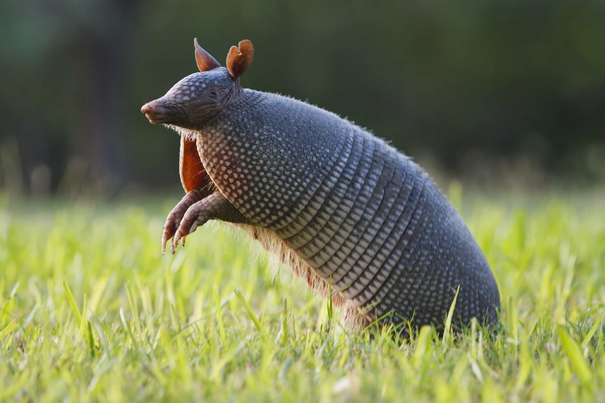

Armadillo

Nombre común:Armadillo
Nombre científico: Dasypodidae (familia)
Hábitat y estilo de vida:
El armadillo es un mamífero que se encuentra principalmente en América, desde el sur de Estados Unidos hasta América del Sur. Prefiere los hábitats de bosques, praderas y áreas desérticas. Es un animal terrestre y nocturno, lo que significa que se alimenta y es más activo durante la noche. Su dieta es principalmente insectívora, aunque también puede consumir pequeños vertebrados, frutas y plantas. Los armadillos son solitarios y pasan gran parte de su tiempo buscando refugio en madrigueras o grietas en el suelo para descansar durante el día.
5 características del armadillo:
- Caparazón protector: El armadillo es conocido por su caparazón duro y blindado, que lo protege de depredadores. El caparazón está compuesto de placas óseas cubiertas por una capa de piel gruesa y dura, proporcionando una defensa natural.
- Capacidad de cavar: Los armadillos son excelentes excavadores. Utilizan sus garras fuertes y adaptadas para cavar en el suelo, buscando insectos, lombrices y pequeños animales. También excavan madrigueras para protegerse de los depredadores y del clima extremo.
- Comportamiento nocturno: Son animales nocturnos, lo que significa que son más activos durante la noche. Esta adaptación les ayuda a evitar el calor extremo del día y facilita la búsqueda de alimento en un ambiente menos competitivo.
- Dieta insectívora: Los armadillos se alimentan principalmente de insectos, como termitas, hormigas y escarabajos. También pueden comer pequeñas cantidades de frutas y plantas, pero su principal fuente de alimento proviene de la caza de insectos y otros invertebrados.
- Capacidad para rodar en algunas especies: Algunas especies de armadillos, como el Dasypus novemcinctus (armadillo de nueve bandas), tienen la capacidad de enrollarse en una bola, lo que les proporciona mayor protección frente a amenazas, aunque no todas las especies de armadillos pueden hacer esto.
regresar al menu